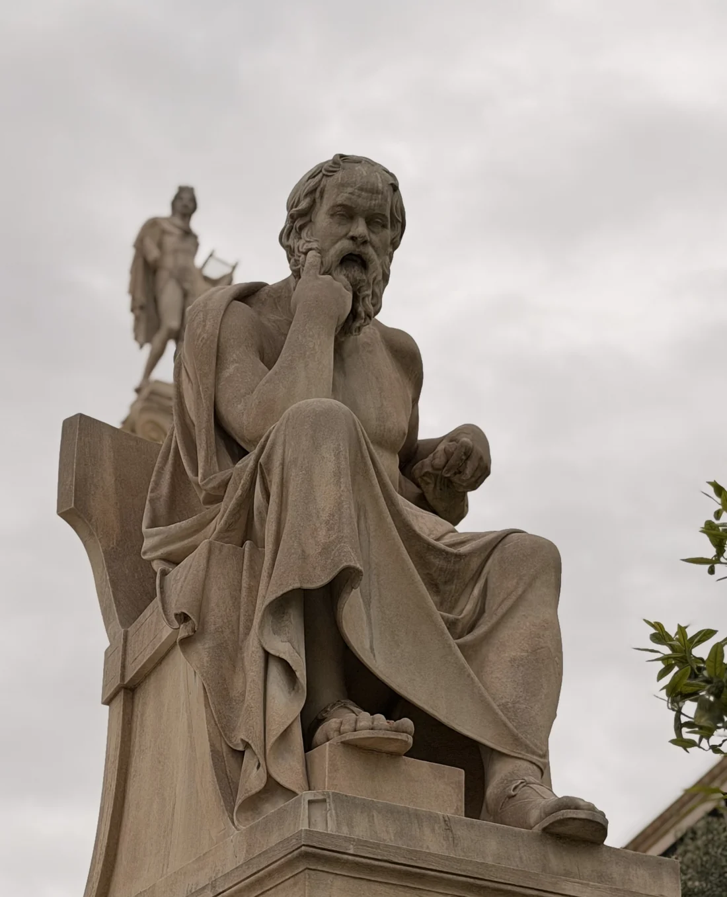

Lecturas selectas30 de octubre de 2026
Razón y fe en la sociedad postsecular
¿Como pueden dialogar la fe y la razón en una sociedad que organiza su vida pública desde criterios seculares?
Daniel Perez Valencia
Leer publicaciónFilosofía · Educación · Cultura · Ética y tecnología
Un espacio para leer con atención, pensar con profundidad y compartir ideas que ayuden a comprender mejor nuestro tiempo.
Novedades de DE+
Lecturas selectas30 de octubre de 2026
¿Como pueden dialogar la fe y la razón en una sociedad que organiza su vida pública desde criterios seculares?
Daniel Perez Valencia
Leer publicaciónLecturas selectas30 de octubre de 2026
El uso de la inteligencia artificial generativa en la universidad plantea una pregunta decisiva: ¿qué aprende el estudiante cuando incorpora respuestas generadas por IA a sus tareas?
Daniel Perez Valencia
Leer publicaciónBlog29 de octubre de 2026
Una reflexión sobre la responsabilidad de orientar la inteligencia artificial y la neurotecnología hacia el cuidado de la vida, con atención a sus efectos sobre la autonomía de las personas y las condiciones del mundo que compartimos.
Daniel Pérez Valencia
Leer publicaciónLecturas selectas27 de octubre de 2026
Una lectura de Ortega y Gasset sobre el ensimismamiento y la posibilidad de formar un criterio propio ante el ruido del entorno digital.
Daniel Pérez Valencia
Leer publicación
Lecturas selectas
Textos escogidos para ampliar la mirada.
Preguntas sobre la vida, nuestras decisiones y los valores que las orientan.
Conocimiento y desarrollos que transforman nuestra manera de comprender el mundo.
Organizaciones, trabajo y liderazgo desde una mirada humana.
El cuidado, la salud, la enfermedad y la experiencia humana.
Sociedades, obras y relatos que ayudan a comprender otras épocas.
Tradiciones y preguntas sobre el sentido de la vida.
Medios audiovisuales
Podcast
Series de audio sobre filosofía, historia, educación, medicina y cultura.
Video
Conferencias, clases abiertas, conversaciones y piezas audiovisuales.
Sobre DE+
DE+ es un proyecto de lectura, pensamiento y divulgación que conecta la filosofía, las humanidades y el conocimiento científico con las preguntas de la vida cotidiana. Un espacio para leer con atención, ampliar la mirada y conversar.
Daniel Pérez Valencia
Mi perfil en LinkedInElizabeth Rojas Gutiérrez
Mi perfil en LinkedIn